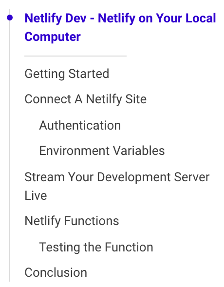

TicTOC 


A framework-agnostic automated table of contents component! Super simple to use, just provide a content container and another container where the TOC would be mounted, and Voila!
Demo
Checkout the demo page here.
Getting started
Installation:
npm i --save @theiliad/tictocUsage
You need to create a div (or any other DOM element) inside of which you'd like the TOC to be mounted (in this case we're using <div id="toc">, as well as another element that includes your content (in this case <div id="article-content">.
import/require:
import TicTOC from "@theiliad/tictoc/index";
import "@theiliad/tictoc/styles.css";
new TicTOC({
contentContainer: document.getElementById("article-content"),
mountTo: document.getElementById("toc")
});In-browser CDN usage:
<link rel="stylesheet" href="https://unpkg.com/@theiliad/tictoc@{VERSION_NUMBER_HERE}/styles.css">
<script src="https://unpkg.com/@theiliad/tictoc@{VERSION_NUMBER_HERE}/bundle_browser.js"></script>
<script>
new TicTOC({
contentContainer: document.getElementById("article-content"),
mountTo: document.getElementById("toc")
});
</script>API Reference
The project is built using Typescript, with minimal dependency usage.
Typedoc generated API references can be found here.